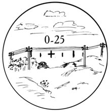
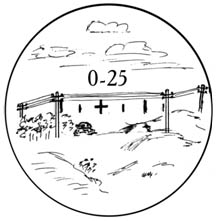

ТОПОГРАФІЯ - Способи визначення кутів та відстаней на місцевості.
Способи визначення кутів на місцевості.
При орієнтуванні і цілевказівці на місцевості горизонтальні (вертикальні) кути між напрямками на місцеві предмети (цілі) вимірюють за допомогою:
- компаса
- кутомірів
- приладів спостереження
- на око
Вимірювання куту напрямку на обєкт відносно напряму на Північ є магнітний азимут (див тему «Визначення магнітного азимуту»).
У військах для вимірювання кутів користуються не градусами, а поділками кутоміра – тисячними. Про тисячні можете прочитати в розділі ВОГНЕВА ПІДГОТОВКА - Кутові величини
Вимірювання кутів в поділках (тисячних) може проводитися:
- кутомірним колом бусолі,
- сіткою бінокля й перископа,
- артилерійським колом (на карті), транспортиром
- ціликом прицілу,
- механізмом бокових поправок снайперського прицілу
- підручними предметами.
Вимірювання кутів за допомогою бінокля та приладів спостереження і прицілювання
В зоровій трубі бінокля є дві взаємно перпендикулярні шкали (сітки) для виміру горизонтальних і вертикальних кутів з ціною великої поділки 0-10, і малої 0-05.
Щоб виміряти кут між двома предметами, необхідно сумістити яку-небудь поділку шкали з одним із них і підрахувати число поділок до другого. Помноживши число поділок на ціну однієї поділки, отримаємо значення вимірюваного кута в тисячних.
На наступному малюнку горизонтальний кут між двома окремими деревами дорівнює 0-45, а вертикальний кут між основою і верхівкою дерева – 0-15.
Прилади спостереження та прицілювання мають шкали, подібні до шкали бінокля:
ПСО-1 (СВД)
Значення однієй поділки шкали в тисячних: 0-01 тис

ПГО (РПГ-7)
Значення однієй поділки шкали в тисячних: 0-10 тис

Біноклі радянські (Б-8, Б-12)
Значення однієй поділки шкали в тисячних: 0-05 тис

Артилерійська бусоль
Значення однієй поділки шкали в тисячних: 0-05 тис
Вимірювання кутів за допомогою компаса
Спочатку мушку візирного механізму компаса встановлюють на нульову поділку шкали. Потім поворотом компаса в горизонтальній площині суміщають через цілик і мушку лінію візування з напрямом на лівий місцевий предмет (ціль).
Після того, не міняючи положення компасу, візирний прилад переводять Е напрям на правий місцевий предмет і знімають по шкалі відлік, який буде відповідати значенню вимірюваного кута в градусах. При вимірюванні кута в тисячних, лінію візування суміщають спочатку з напрямом на правий предмет, так як рахунок тисячних зростає проти ходу годинникової стрілки.
Більш досконалим в цьому плані засобом є артилерійська бусоль, за допомогою якої можна отримати і азимут на ціль, і просто кутову величину цілі
Вимірювання кутів за допомогою лінійки
За допомогою лінійки з міліметровими поділками можна виміряти кут в поділках кутоміра і в градусах. Якщо лінійку тримати перед собою на відстані 50см від ока,то 1 мм на лінійці буде відповідати двом тисячним (0-02). При вимірюванні кута необхідно підрахувати на лінійці число міліметрів між місцевими предметами (цілями) і помножити на 0-02 Одержаний результат буде відповідати значенню вимірюваного кута е тисячних. На другому малюнку кут між стовпами становить 0-32 (16мм х0-02), а висота дерева 0-21 (10,5мм х 0-02).
При вимірюванні кута в градусах лінійка виноситься перед собою на відстань 60 см. У цьому випадку 1см на лінійці буде відповідати І °.
Вимірювання кутів за допомогою підручних матеріалів
Під час використання для вимірювання кутів підручних предметів необхідно заздалегідь визначити їх кутову величину Використовують невеликі підручні предмети (лінійка, олівець, коробка сірників), а також пальці руки. Для цього треба знати їх значення в тисячних: – мм лінійки відповідає 0-02 (двом тисячним); – круглий олівець має діаметр 0-12; 34 – коробка сірників: довжина – 0-90, ширина – 0-50, висота – 0-30; – пальці руки: великий – 0-40, вказівний – 0-30, мізинець – 0-20. Предмет слід тримати на відстані 50 см від ока.
Кут між великим і середнім пальця ми руки дорівнює 90°, а між середнім і вказівним – 40°. Знаючи це, можна визначити крутість схилу. На малюнку крутість схилу дорівнює 20-22°.
Переведення кутів з градусів в тисячні
В деяких випадках може виникнути необхідність перевести кут в градуса в тисячні, наприклад азимут в дирекцій ний кут. Для цього застосовуємо коефіцієнти:
α°=αтис*0,06
αтис=α°*16,66
У випадку, коли не пам’ятаєте ці формули можна використати залежності з
яких вони беруться, а саме:
Кут в градусах відноситься до 360° так саме як цей кут в тисячних відноситься до 6000
α°/360°= αтис/6000
Способи визначення відстаней
Відстані на місцевості в залежності від обстановки і характеру намічених завдань вимірюють:
- На око (окомірний спосіб)
- Визначення відстані за відрізками місцевості.
- За відношенням швидкості світла спалаху пострілу до звуку пострілу.
- За кутовими і лінійними розмірами місцевих предметів
- Визначення дальності до цілі шляхом порівняння розмірів цілі, що бачимо з покривною величиною мушки або прорізі прицілу
- За допомогою оптичного прицілу ПГО-7 для РПГ-7, ПСО для СВД.
- На слух.
- Визначення віддалі за демаскуючими ознаками
- за часом і швидкістю руху.
- Безпосереднім проміром (паракроки)
- По спідометру машини
Окомірний спосіб
Основний, найпростіший і швидкий, найбільш доступний у будь-яких умовах бойової обстановки спосіб при виконанні вогневого завдання зі стрілецької зброї.
Полягає в порівнянні дальності до цілі з відстанню до орієнтира (місцевого предмета
Визначення відстані за відрізками місцевості.
Визначення відстаней за звуком і спалахом пострілу
Дозволяє швидко визначати відстань до стріляючих гармат, мінометів, кулеметів й інших цілей, що виявляють себе в момент пострілу спалахом і утворенням димових кілець.
Світло розповсюджується 300 000 км/год., а звук – із швидкістю 330 м/с.
Тобто наближено 1 км за 3 с. Потрібно різницю часів від спалаху до звуку помножити на 330 м/с, і одержимо відстань, з якої вівся вогонь, або цю ж різницю можна поділити на число 3.
Наприклад, спостерігач почув постріл через 11 с після спалаху. Відстань до місця спалаху
Д=11/3=3,7 км
Визначення відстаней по кутовим розмірам предметів.
Визначення відстаней за кутовими розмірами предметів базується на залежності між кутовими і
лінійними величинами. Кутові розміри предметів вимірюються в тисячних за допомогою компаса,
приладів спостереження і прицілювання.
Відстань до предметів у метрах визначають за формулою «Дуй в тисячу»:
Д = В/У х 1000
Д – дальність до предмета
В – висота (ширина) предмета, м
У – кутова величина предмета, тис.
При необхідності отримання точнішого результату знайдену величину В збільшують на 5%, а Д і У
зменшують на 5%.
Для визначення відстані до предмета, лінійний розмір якого відомий (висота, ширина або довжина),
треба взнати, скільки тисячних частин дуги кола займає предмет за яким спостерігають (по висоті,
ширині або по довжині).
Наприклад: танк противника розташований на рубежі стовпів, відстань між
стовпами лінії зв’язку 25 тисячних (0-25, нуль двадцять п’ять), а його лінійна
величина 50 м. Розділивши
лінійну величину (50 м) на число тисячних (25), взнаємо, скільком метрам відповідає одна тисячна:
50 : 25 = 2 м. помноживши 2 м на 1000, одержимо відстань до стовпів – 2000 м (мал.
7).
Д = В*1000/У = 50*1000/25=2000м

Наприклад: Ціль – БТР (мал. 10) за яким спостерігають в
бінокль, ширина якого дорівнює 2,5 м, покривається поділкою сітки бінокля, яка дорівнює 0-05.
Визначити відстань до цілі
Д = В*1000/У=2,5*1000/5=500м
Наприклад , кутовий розмір наміченого в бінокль орієнтиру (окреме дерево),
висота якого 12 м, дорівнює трьом малим поділкам і сітки бінокля (0-15). Отже, відстань до
орієнтиру
Д=12*1000/15=800м
Визначення відстані за допомогою лінійки
За допомогою лінійки, розміщеної на відстані 50 см від ока, вимірюють в міліметрах висоту
(ширину) предмета, за яким спостерігаємо. Отримане число міліметрів помножуємо на 2, так як
одному міліметру лінійки при віддаленні її на 50 см від ока відповідає кутова величина і 2
тисячні.
Далі підставляємо дані до формули тисячної. В нас є кутова величина, реальні лінійні розміри
предмета (в метрах).
Наприклад, телеграфний стовп висотою 6 м закриває на лінійці
відрізок 10мм. Відповідно відстань до стовпа:
Д= (6*1000)/20=300м
Точність визначення відстаней за кутовими і лінійними величинами складає 5-10%довжини
відстані, що вимірюється.
Визначення відстані до цілі за допомогою інших предметів
Наприклад: якщо товщина сірникового коробка складає 1,5 см або 15 мм,
то його кутова величина (У) при віддаленні 50 см від ока буде складати: 15 х 2 = 30 або
у тисячних 0-30 і т. д.
№№
п/п
Назва предметів
Ціна в мм
Ціна в тисячних
1
Пальці рук: – великий
– вказівний, середній
20 : 25 мм
15 : 25 мм
0-40 – 0-50
0-30 – 0-50
2
Олівець гранований (0,7 см)
7 мм
0-14
3
Сірникова коробка:
– довжина (5 см)
– ширина (3,5 см)
– висота (товщина) (1,5 см)
50 мм
35 мм
15 мм
1-00
0-70
0-30
4
1 мм лінійного розміру
1 мм
0-02
Приклад. Кулеметний розрахунок (мал. 11), за яким
спостерігають (навідник кулемета та номер розрахунка 2 чоловіки 0,5 м + 0,5 м = 1 м) займає на
міліметровій лінійці 1 мм. Визначити відстань до кулеметного розрахунка, приціл та точку
наводки.
Д=В*1000/У=1*1000/2=500м
Можна також, знаючи дальність і кутове значення об’єкта, за яким спостерігають в
прилад, визначити лінійні розміри (ширину, висоту, довжину) об’єкта.
Приклад. Міст через річку, який знаходиться на відстані 3000 м, по
довжині займає 4 малих поділки сітки бінокля 0-20. Визначити довжину моста (В).
В=Д*У/1000=3000*20/1000=60м

Визначення відстані за допомогою мушки
Так, знаючи, що покривна величина мушки АК-74 на 100м дорівнює 25 см, можна обрахувати за
формулою тисячних кутову величину що займає мушка. Вона буде дорівнювати 0-02,5.
Приклад 1. Атакуючий стрілець, за яким спостерігають через приціл
автомата, по ширині займає 1/2 товщини мушки. Визначити дальність до стрільця.
Ми знаємо,що мушка при прицілюванні займає кутову величину 0-02,5. Стрілець займає половину мушки
тобто кутову величину 0-01,25. Ширина стрільця (габарит об’єкта) приблизно 0,5 .
Підставляємо ці данні в формулу тисячних
Д=0,5м*1000/1,25=400м
Визначення дальності до цілі шляхом порівняння розмірів цілі, що бачимо з покривною величиною мушки
або прорізі прицілу
Будь-який предмет на визначеному видаленні від ока перекриває визначений відрізок місцевості. Чим
далі від спостерігача знаходиться ділянка місцевості, тим більший відрізок на цій місцевості
перекриває візуально предмет, що розташований перед нашим оком. По практичному сприйняттю
– мушка автомата на 100 метрів перекриває приблизно 25 см. (Що ми можемо побачити на
приладах командирського ящика, стрілецькій лінійці і показній мушці. Грудна мішень на
стрілецькій лінійці 0,5 см і залежність мішені відповідно до дальності до цілі і мушки автомата
виглядає так. Знаючи розміри предметів (наприклад, ширина БТР - 2,5 метра, танка - 3 метра)
можна легко визначити дальність до них.
Знаючи криючу величину мушки автомата, що вона на 100 м перекриває ділянку в »
25 см; на 200 м мушка буде перекривати ділянку місцевості або частину предмета в
» 50 см; на 300 м » 75 см; на 400 м » 1 м і т. д.,
можна легко визначити дальність до цілі противника, знаючи їх лінійні розміри. Їх небагато і
вони легко запам’ятовуються. Ширина танка » 3 м; ширина БТР
» 2,5 м; людина по ширині » 0,5 м; кулеметна обслуга (2 чоловіки)
» 1 м.
Приклад 1. Атакуючий стрілець, за яким спостерігають через приціл автомата, по ширині
займає 1/2 товщини мушки. Визначити дальність до стрільця.
У відповідності з даною умовою визначаємо на дальності 100 м – криюча величина мушки
автомата – 25 см на Х м мушка автомата в 2 рази більша, ніж ширина (0,5 м)
стрілка, тобто перекриває 1 м, математично визначаємо:
100 м – 25 см (0,25 м)
Х м – 1 м
Х =100*1/0,25=400 Дальність до стрільця – 400 м
Приклад 2. Мушка автомата займає 1/2 ширини танка. Визначити дальність до
нього. Знаючи, що ширина танка складається 3 м. Із умови задачі криюча величина мушки 1/2
ширини танка, тобто 1,5 м, визначаємо:
100 м – 25 см
Х м – 150 см
Х=100*150/25=600m
Вид зброї
найменування покривної величини
покривна величина на 100 м
АК-74
товщина мушки
0,3 м
ширина прорізі
0,6 м
РПК
товщина мушки
0,3 м
ширина прорізі
1,0 м
ПК
товщина мушки
0,25 м
ширина прорізі
1,0 м
За допомогою оптичного прицілу ПГО-7 для РПГ-7.
Для визначення відстані за дальномірною шкалою оптичного прицілу необхідно навести шкалу на
ціль так, щоб ціль розташувалась між суцільною горизонтальною та нахиленою пунктирною
лініями. Штрих шкали, розташований над ціллю, вказує відстань до цілі, яка має висоту 2,7 м.
На малюнку 18, поділка 6 – складає 600 метрів. Якщо ціль має висоту меншу
(більшу) 2,7 м, то необхідно з відстані, визначеної по шкалі, відняти (додати) поправку,
рівну добутку помножених числа десятих метра різниці у висоті цілі на постійне число 4 та на
цифру шкали, розташовану над ціллю.
Приклад. Визначити відстань до важкого танка противника, що має висоту 3,2 м, якщо
танк своєю верхньою частиною торкається пунктирної лінії дальномірної шкали з штрихом,
позначеним цифрою 6.
Рішення. Різниця у висоті цілі дорівнює 0,5 м, або 5 десятим метра (3,2 м – 2,7 м);
поправка дорівнює 120 м (5 десятих метра ´ 4 ´ 6); відстань до цілі
дорівнює 720 м (600 м + 120 м) або приблизно 700 м.
Приблизно поправка до зміненої за шкалою відстані до цілі приймається рівною: якщо висота цілі
відрізняється від 2,7 м не більше, ніж на 0,3 м – 50 м, а більше 0,3 м – 100 м.
Відстань до цілі за дальномірною шкалою можливо визначити лише тоді, коли ціль по висоті видна
повністю. Якщо ціль по висоті видна не повністю, тоді визначення відстаней за цією шкалою може
призвести до грубих помилок (дальності при цьому, як правило, завищені).
Визначення віддалі на слух
Тренований слух – добрий помічник в визначенні відстані вночі.
Потрібно знати таблицю.
Об'єкти І характер звуку
Дальність чутності, км
Тиха розмова, кашель, заряджання зброї, різання
дроту
0,1 - 0,2
Забивання в землю кілків
вручну
0,3
Рубання І пиляння лісу (цюкання
сокири)
0, 4
Падіння зрубаних дерев
0,8
Рух
автомобілів
0,5-1,0
Копання (риття)
окопів
1,0
Поодинокі постріли з
автомата
2-3
Стрільба чергами, рух
танків
3-4
Стрільба
артилерії
10-15
Визначення віддалі за демаскуючими ознаками
Вогонь від цигарки видно до 500 м.
Світло кишенькового ліхтаря – до 1,5-2 км.
Спалахи пострілу із стрілецької зброї – до1,5-2 км,
Світло фар автомобіля і танка – до 4-8 км.
Визначення віддалі за часом і швидкістю руху
Цей метод використовуютьдля приблизного визначення пройденого шляху, для чого середню
швидкість множать на час руху. Середня швидкість пішохода біля 5 км/год., а при русі на лижах
8-10км/год. Наприклад, якщо дозор розвідки рухався на лижах 3 год., то він пройшов біля 30
км.
Визначення дальності безпосереднім проміром.
Спосіб визначення дальності безпосереднім проміром, як правило, використовується при завчасному
переході підрозділів до захисту й призначений для більш точного визначення відстаней до
орієнтирів, які в бою будуть застосовуватись для керування вогнем. Цей спосіб може
використовуватись групою при пересуванні по азимутам.
Пара кроків чоловіка середнього росту дорівнює 1,5 м.
Довжину свого кроку можна визначити за формулою:
Д=P/4 +0,37
Пара кроків = 2× Д (3.3.1.2)
де: Р - зріст людини в метрах.
Тут застосовується безпосередній промір в парах кроків, які переводяться в метри за формулою:
Д=ПК *1,5
Наприклад: відстань, яка виміряна до окремого дерева – орієнтир №3 – складає 400 пар
кроків. Визначити дальність в метрах.
Д=400 п. к.* 1,5= 600 м
Вимірювання віддалі по спідометру машини
Відстань, пройдену машиною, визначають як різницю відліків за спідометром на початку і в
кінці дороги.
Лінійні розміри деяких предметів.
#
Найменування предмета
Висота, м
Ширина, м
Довжина, м
1
Человексереднегороста
1.7
2
Деревинній столб ліній связи
5-7
3
Ростояніємежду столами ліній связі
50-60
4
Росстояніємежду опорами ліній електро сіті
100
5
Одно єтажнийдом з кришой
6-8
6
Один єтажмного етажного дома
3-4
7
Один єтажпромишльоногозданія
5-6
8
Заводская труба
30
9
Железнодорожння будка
4
10
Вагон пасажирський
4.25
2.75
24-25
11
Вагон товарний двуосьний
3.8
2.75
7.2
12
Вагон товарний двомногосьний
4
2.75
13.6
13
Железнодорожняцестернадвуосьна
3
2.75
6.75
14
Железнодорожняцестерначетерьохосьна
3
2.75
9
15
Жнлезнодорожня платформа двуосная
1.6
2.75
9.2
16
Железнодорожня платформа чотирохосьна
1.6
2.75
13
17
Грузовий автомобіль газ 53
2.22
2.02
6.4
18
Грузовий автомобіль зіл 130
2.4
2.5
6.67
19
Грузовий автомобіль маз 5551 самосвал
2.92
2.5
5.99
20
Грузовий автомобіль камаз 5320 бртовий
2.63
2.5
7.43
21
Легковий автомобіль ваз 2101
1.38
1.61
4.07
22
Легковий автомобіль ваз 2106
1.44
1.61
4.16
23
Легковий автомобіль ваз 2108 2109
1.4
1.65
4.0
24
Легковий автомобіль ваз21099
1.4
1.62
4.2
25
Мотоцикл с калязкую
1
1.2
2
Бтр 60 п па
2.1 2.37
2.9
7.22
Бтр 60 пб
2.42
2.82
7.56
Бтр 70
2.23 2.32
2.8
7.53
Бтр 80
2.35 2.46
2.9
7.65
Бтр 90 росток
3.0
3.1
8.2
Брдм
2.29
2.25
5.7
Брдм 2
2.39
2.35
5.75
Брдм 3
2.76
2.9
7.7
Бмп 1
1.92
2.94
6.46
Бмп 2
2.06
3.09
6.73
Бмп 3
2.3
3.15
7.2
Бмд 1
Кп1.62-1.97
2.63
5.4
Бмд 2
Кп1.61-1.96
2.63
5.4
Бмд 3
Кп2.17-2.45
3.11
6.0
МТ-ЛБ
1.83-1.89
2.82-2.86
6.39-6.50
САУ 2с1 гвоздіка
2.72
2.85
7.26
САУ 2с2 акація
3.05
3.25
7.76
АСАО 2с9 нона с
Кп2.30-2.65
2.63
6.02кр6.02
ЗСУ 23-4 шилка
П2.57-б3.57
3.12
6.53
Гаубіца 2а18 д-30
П1.60
П1.90
П5.40
Гаубіца 2а36 гиацинт б
Б2.76
П2.78
Б12.30
Танк т-64 булат
2.17
3.6
9.22кр6.54
Танк т-72
2.19
3.46
9.53кр6.86
Танкт-80
2.19
3.52
9.65кр6.98
Танк-90
2.23
3.78
9.53кп6.86
Бм-21 град на базі урал 375д
П3.09
2.4
7.35
Г/а урал 375
К2.68-т2.98
2.69
7.35
Г/а зіл 131
К2.48-т2.97
2.5
7.04
Г/а камаз 4610
К2.9-т3.2
2.5
7.65
Г/а камаз 5350 мустанг
К3.0-т3.29
2.55
7.96
Г/а газ 66
К2.44-т2.44
2.34
5.65
Л/ауаз 469 3151
2.01
1.8
4.02
Використані джерела
- Стрілецька зброя - ГОРЧАКОВ Л.О.
- Навчальні матеріали Академії сухопутних військ імені гетьмана Петра Сагайдачного
- Інші джерела
Визначення відстаней за кутовими розмірами предметів базується на залежності між кутовими і лінійними величинами. Кутові розміри предметів вимірюються в тисячних за допомогою компаса, приладів спостереження і прицілювання.
Відстань до предметів у метрах визначають за формулою «Дуй в тисячу»:
Д = В/У х 1000
Д – дальність до предмета
В – висота (ширина) предмета, м
У – кутова величина предмета, тис.
При необхідності отримання точнішого результату знайдену величину В збільшують на 5%, а Д і У зменшують на 5%.
Для визначення відстані до предмета, лінійний розмір якого відомий (висота, ширина або довжина), треба взнати, скільки тисячних частин дуги кола займає предмет за яким спостерігають (по висоті, ширині або по довжині).
Наприклад: танк противника розташований на рубежі стовпів, відстань між стовпами лінії зв’язку 25 тисячних (0-25, нуль двадцять п’ять), а його лінійна величина 50 м. Розділивши
лінійну величину (50 м) на число тисячних (25), взнаємо, скільком метрам відповідає одна тисячна: 50 : 25 = 2 м. помноживши 2 м на 1000, одержимо відстань до стовпів – 2000 м (мал. 7).
Д = В*1000/У = 50*1000/25=2000м
Наприклад: Ціль – БТР (мал. 10) за яким спостерігають в бінокль, ширина якого дорівнює 2,5 м, покривається поділкою сітки бінокля, яка дорівнює 0-05. Визначити відстань до цілі
Д = В*1000/У=2,5*1000/5=500м
Наприклад , кутовий розмір наміченого в бінокль орієнтиру (окреме дерево), висота якого 12 м, дорівнює трьом малим поділкам і сітки бінокля (0-15). Отже, відстань до орієнтиру
Д=12*1000/15=800м
Визначення відстані за допомогою лінійки
За допомогою лінійки, розміщеної на відстані 50 см від ока, вимірюють в міліметрах висоту (ширину) предмета, за яким спостерігаємо. Отримане число міліметрів помножуємо на 2, так як одному міліметру лінійки при віддаленні її на 50 см від ока відповідає кутова величина і 2 тисячні.
Далі підставляємо дані до формули тисячної. В нас є кутова величина, реальні лінійні розміри предмета (в метрах).
Наприклад, телеграфний стовп висотою 6 м закриває на лінійці відрізок 10мм. Відповідно відстань до стовпа:
Д= (6*1000)/20=300м
Точність визначення відстаней за кутовими і лінійними величинами складає 5-10%довжини відстані, що вимірюється.
Визначення відстані до цілі за допомогою інших предметів
Наприклад: якщо товщина сірникового коробка складає 1,5 см або 15 мм, то його кутова величина (У) при віддаленні 50 см від ока буде складати: 15 х 2 = 30 або у тисячних 0-30 і т. д.
|
№№ п/п |
Назва предметів |
Ціна в мм |
Ціна в тисячних |
|
1 |
Пальці рук: – великий – вказівний, середній |
20 : 25 мм 15 : 25 мм |
0-40 – 0-50 0-30 – 0-50 |
|
2 |
Олівець гранований (0,7 см) |
7 мм |
0-14 |
|
3 |
Сірникова коробка: – довжина (5 см) – ширина (3,5 см) – висота (товщина) (1,5 см) |
50 мм 35 мм 15 мм |
1-00 0-70 0-30 |
|
4 |
1 мм лінійного розміру |
1 мм |
0-02 |
Приклад. Кулеметний розрахунок (мал. 11), за яким спостерігають (навідник кулемета та номер розрахунка 2 чоловіки 0,5 м + 0,5 м = 1 м) займає на міліметровій лінійці 1 мм. Визначити відстань до кулеметного розрахунка, приціл та точку наводки.
Д=В*1000/У=1*1000/2=500м
Можна також, знаючи дальність і кутове значення об’єкта, за яким спостерігають в прилад, визначити лінійні розміри (ширину, висоту, довжину) об’єкта.
Приклад. Міст через річку, який знаходиться на відстані 3000 м, по довжині займає 4 малих поділки сітки бінокля 0-20. Визначити довжину моста (В).
В=Д*У/1000=3000*20/1000=60м
Визначення відстані за допомогою мушки
Так, знаючи, що покривна величина мушки АК-74 на 100м дорівнює 25 см, можна обрахувати за формулою тисячних кутову величину що займає мушка. Вона буде дорівнювати 0-02,5.
Приклад 1. Атакуючий стрілець, за яким спостерігають через приціл автомата, по ширині займає 1/2 товщини мушки. Визначити дальність до стрільця.
Ми знаємо,що мушка при прицілюванні займає кутову величину 0-02,5. Стрілець займає половину мушки тобто кутову величину 0-01,25. Ширина стрільця (габарит об’єкта) приблизно 0,5 . Підставляємо ці данні в формулу тисячних
Д=0,5м*1000/1,25=400м
Будь-який предмет на визначеному видаленні від ока перекриває визначений відрізок місцевості. Чим далі від спостерігача знаходиться ділянка місцевості, тим більший відрізок на цій місцевості перекриває візуально предмет, що розташований перед нашим оком. По практичному сприйняттю – мушка автомата на 100 метрів перекриває приблизно 25 см. (Що ми можемо побачити на приладах командирського ящика, стрілецькій лінійці і показній мушці. Грудна мішень на стрілецькій лінійці 0,5 см і залежність мішені відповідно до дальності до цілі і мушки автомата виглядає так. Знаючи розміри предметів (наприклад, ширина БТР - 2,5 метра, танка - 3 метра) можна легко визначити дальність до них.
Знаючи криючу величину мушки автомата, що вона на 100 м перекриває ділянку в » 25 см; на 200 м мушка буде перекривати ділянку місцевості або частину предмета в » 50 см; на 300 м » 75 см; на 400 м » 1 м і т. д., можна легко визначити дальність до цілі противника, знаючи їх лінійні розміри. Їх небагато і вони легко запам’ятовуються. Ширина танка » 3 м; ширина БТР » 2,5 м; людина по ширині » 0,5 м; кулеметна обслуга (2 чоловіки) » 1 м.
Приклад 1. Атакуючий стрілець, за яким спостерігають через приціл автомата, по ширині займає 1/2 товщини мушки. Визначити дальність до стрільця.
У відповідності з даною умовою визначаємо на дальності 100 м – криюча величина мушки автомата – 25 см на Х м мушка автомата в 2 рази більша, ніж ширина (0,5 м) стрілка, тобто перекриває 1 м, математично визначаємо:
100 м – 25 см (0,25 м)
Х м – 1 м
Х =100*1/0,25=400 Дальність до стрільця – 400 м
Приклад 2. Мушка автомата займає 1/2 ширини танка. Визначити дальність до нього. Знаючи, що ширина танка складається 3 м. Із умови задачі криюча величина мушки 1/2 ширини танка, тобто 1,5 м, визначаємо:
100 м – 25 см
Х м – 150 см
Х=100*150/25=600m
|
Вид зброї |
найменування покривної величини |
покривна величина на 100 м |
|
АК-74 |
товщина мушки |
0,3 м |
|
ширина прорізі |
0,6 м |
|
|
РПК |
товщина мушки |
0,3 м |
|
ширина прорізі |
1,0 м |
|
|
ПК |
товщина мушки |
0,25 м |
|
ширина прорізі |
1,0 м |
Для визначення відстані за дальномірною шкалою оптичного прицілу необхідно навести шкалу на ціль так, щоб ціль розташувалась між суцільною горизонтальною та нахиленою пунктирною лініями. Штрих шкали, розташований над ціллю, вказує відстань до цілі, яка має висоту 2,7 м. На малюнку 18, поділка 6 – складає 600 метрів. Якщо ціль має висоту меншу (більшу) 2,7 м, то необхідно з відстані, визначеної по шкалі, відняти (додати) поправку, рівну добутку помножених числа десятих метра різниці у висоті цілі на постійне число 4 та на цифру шкали, розташовану над ціллю.
Приклад. Визначити відстань до важкого танка противника, що має висоту 3,2 м, якщо танк своєю верхньою частиною торкається пунктирної лінії дальномірної шкали з штрихом, позначеним цифрою 6.
Рішення. Різниця у висоті цілі дорівнює 0,5 м, або 5 десятим метра (3,2 м – 2,7 м); поправка дорівнює 120 м (5 десятих метра ´ 4 ´ 6); відстань до цілі дорівнює 720 м (600 м + 120 м) або приблизно 700 м.
Приблизно поправка до зміненої за шкалою відстані до цілі приймається рівною: якщо висота цілі відрізняється від 2,7 м не більше, ніж на 0,3 м – 50 м, а більше 0,3 м – 100 м.
Відстань до цілі за дальномірною шкалою можливо визначити лише тоді, коли ціль по висоті видна повністю. Якщо ціль по висоті видна не повністю, тоді визначення відстаней за цією шкалою може призвести до грубих помилок (дальності при цьому, як правило, завищені).
Тренований слух – добрий помічник в визначенні відстані вночі.
Потрібно знати таблицю.
|
Об'єкти І характер звуку |
Дальність чутності, км |
|
Тиха розмова, кашель, заряджання зброї, різання дроту |
0,1 - 0,2 |
|
Забивання в землю кілків вручну |
0,3 |
|
Рубання І пиляння лісу (цюкання сокири) |
0, 4 |
|
Падіння зрубаних дерев |
0,8 |
|
Рух автомобілів |
0,5-1,0 |
|
Копання (риття) окопів |
1,0 |
|
Поодинокі постріли з автомата |
2-3 |
|
Стрільба чергами, рух танків |
3-4 |
|
Стрільба артилерії |
10-15 |
Вогонь від цигарки видно до 500 м.
Світло кишенькового ліхтаря – до 1,5-2 км.
Спалахи пострілу із стрілецької зброї – до1,5-2 км,
Світло фар автомобіля і танка – до 4-8 км.
Цей метод використовуютьдля приблизного визначення пройденого шляху, для чого середню швидкість множать на час руху. Середня швидкість пішохода біля 5 км/год., а при русі на лижах 8-10км/год. Наприклад, якщо дозор розвідки рухався на лижах 3 год., то він пройшов біля 30 км.
Спосіб визначення дальності безпосереднім проміром, як правило, використовується при завчасному переході підрозділів до захисту й призначений для більш точного визначення відстаней до орієнтирів, які в бою будуть застосовуватись для керування вогнем. Цей спосіб може використовуватись групою при пересуванні по азимутам.
Пара кроків чоловіка середнього росту дорівнює 1,5 м.
Довжину свого кроку можна визначити за формулою:
Д=P/4 +0,37
Пара кроків = 2× Д (3.3.1.2)
де: Р - зріст людини в метрах.
Тут застосовується безпосередній промір в парах кроків, які переводяться в метри за формулою:
Д=ПК *1,5
Наприклад: відстань, яка виміряна до окремого дерева – орієнтир №3 – складає 400 пар кроків. Визначити дальність в метрах.
Д=400 п. к.* 1,5= 600 м
Відстань, пройдену машиною, визначають як різницю відліків за спідометром на початку і в кінці дороги.
|
# |
Найменування предмета |
Висота, м |
Ширина, м |
Довжина, м |
|
1 |
Человексереднегороста |
1.7 |
|
|
|
2 |
Деревинній столб ліній связи |
5-7 |
|
|
|
3 |
Ростояніємежду столами ліній связі |
|
50-60 |
|
|
4 |
Росстояніємежду опорами ліній електро сіті |
|
100 |
|
|
5 |
Одно єтажнийдом з кришой |
6-8 |
|
|
|
6 |
Один єтажмного етажного дома |
3-4 |
|
|
|
7 |
Один єтажпромишльоногозданія |
5-6 |
|
|
|
8 |
Заводская труба |
30 |
|
|
|
9 |
Железнодорожння будка |
4 |
|
|
|
10 |
Вагон пасажирський |
4.25 |
2.75 |
24-25 |
|
11 |
Вагон товарний двуосьний |
3.8 |
2.75 |
7.2 |
|
12 |
Вагон товарний двомногосьний |
4 |
2.75 |
13.6 |
|
13 |
Железнодорожняцестернадвуосьна |
3 |
2.75 |
6.75 |
|
14 |
Железнодорожняцестерначетерьохосьна |
3 |
2.75 |
9 |
|
15 |
Жнлезнодорожня платформа двуосная |
1.6 |
2.75 |
9.2 |
|
16 |
Железнодорожня платформа чотирохосьна |
1.6 |
2.75 |
13 |
|
17 |
Грузовий автомобіль газ 53 |
2.22 |
2.02 |
6.4 |
|
18 |
Грузовий автомобіль зіл 130 |
2.4 |
2.5 |
6.67 |
|
19 |
Грузовий автомобіль маз 5551 самосвал |
2.92 |
2.5 |
5.99 |
|
20 |
Грузовий автомобіль камаз 5320 бртовий |
2.63 |
2.5 |
7.43 |
|
21 |
Легковий автомобіль ваз 2101 |
1.38 |
1.61 |
4.07 |
|
22 |
Легковий автомобіль ваз 2106 |
1.44 |
1.61 |
4.16 |
|
23 |
Легковий автомобіль ваз 2108 2109 |
1.4 |
1.65 |
4.0 |
|
24 |
Легковий автомобіль ваз21099 |
1.4 |
1.62 |
4.2 |
|
25 |
Мотоцикл с калязкую |
1 |
1.2 |
2 |
|
|
Бтр 60 п па |
2.1 2.37 |
2.9 |
7.22 |
|
|
Бтр 60 пб |
2.42 |
2.82 |
7.56 |
|
|
Бтр 70 |
2.23 2.32 |
2.8 |
7.53 |
|
|
Бтр 80 |
2.35 2.46 |
2.9 |
7.65 |
|
|
Бтр 90 росток |
3.0 |
3.1 |
8.2 |
|
|
Брдм |
2.29 |
2.25 |
5.7 |
|
|
Брдм 2 |
2.39 |
2.35 |
5.75 |
|
|
Брдм 3 |
2.76 |
2.9 |
7.7 |
|
|
Бмп 1 |
1.92 |
2.94 |
6.46 |
|
|
Бмп 2 |
2.06 |
3.09 |
6.73 |
|
|
Бмп 3 |
2.3 |
3.15 |
7.2 |
|
|
Бмд 1 |
Кп1.62-1.97 |
2.63 |
5.4 |
|
|
Бмд 2 |
Кп1.61-1.96 |
2.63 |
5.4 |
|
|
Бмд 3 |
Кп2.17-2.45 |
3.11 |
6.0 |
|
|
МТ-ЛБ |
1.83-1.89 |
2.82-2.86 |
6.39-6.50 |
|
|
САУ 2с1 гвоздіка |
2.72 |
2.85 |
7.26 |
|
|
САУ 2с2 акація |
3.05 |
3.25 |
7.76 |
|
|
АСАО 2с9 нона с |
Кп2.30-2.65 |
2.63 |
6.02кр6.02 |
|
|
ЗСУ 23-4 шилка |
П2.57-б3.57 |
3.12 |
6.53 |
|
|
Гаубіца 2а18 д-30 |
П1.60 |
П1.90 |
П5.40 |
|
|
Гаубіца 2а36 гиацинт б |
Б2.76 |
П2.78 |
Б12.30 |
|
|
Танк т-64 булат |
2.17 |
3.6 |
9.22кр6.54 |
|
|
Танк т-72 |
2.19 |
3.46 |
9.53кр6.86 |
|
|
Танкт-80 |
2.19 |
3.52 |
9.65кр6.98 |
|
|
Танк-90 |
2.23 |
3.78 |
9.53кп6.86 |
|
|
Бм-21 град на базі урал 375д |
П3.09 |
2.4 |
7.35 |
|
|
Г/а урал 375 |
К2.68-т2.98 |
2.69 |
7.35 |
|
|
Г/а зіл 131 |
К2.48-т2.97 |
2.5 |
7.04 |
|
|
Г/а камаз 4610 |
К2.9-т3.2 |
2.5 |
7.65 |
|
|
Г/а камаз 5350 мустанг |
К3.0-т3.29 |
2.55 |
7.96 |
|
|
Г/а газ 66 |
К2.44-т2.44 |
2.34 |
5.65 |
|
|
Л/ауаз 469 3151 |
2.01 |
1.8 |
4.02 |
- Стрілецька зброя - ГОРЧАКОВ Л.О.
- Навчальні матеріали Академії сухопутних військ імені гетьмана Петра Сагайдачного
- Інші джерела